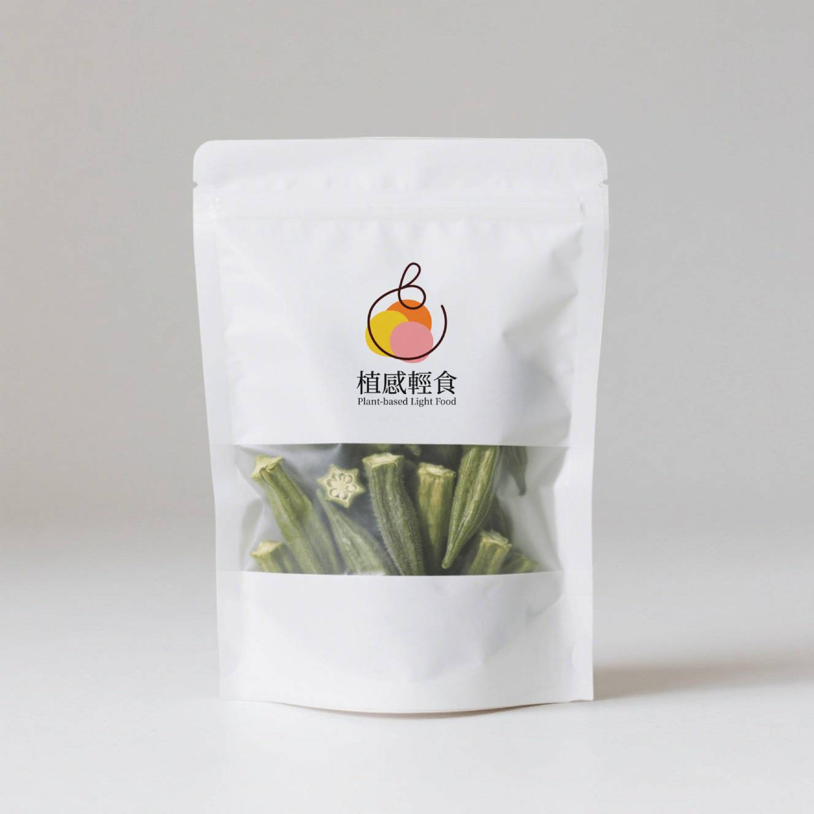
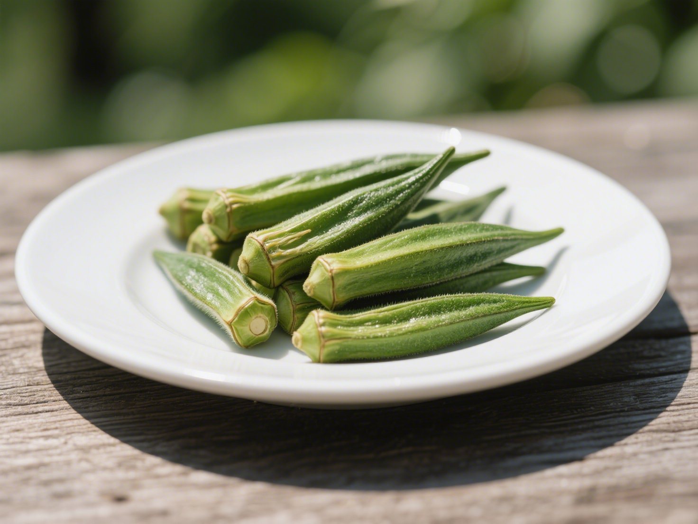
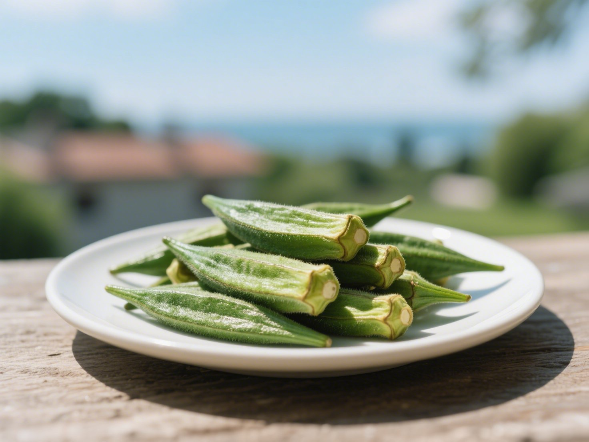
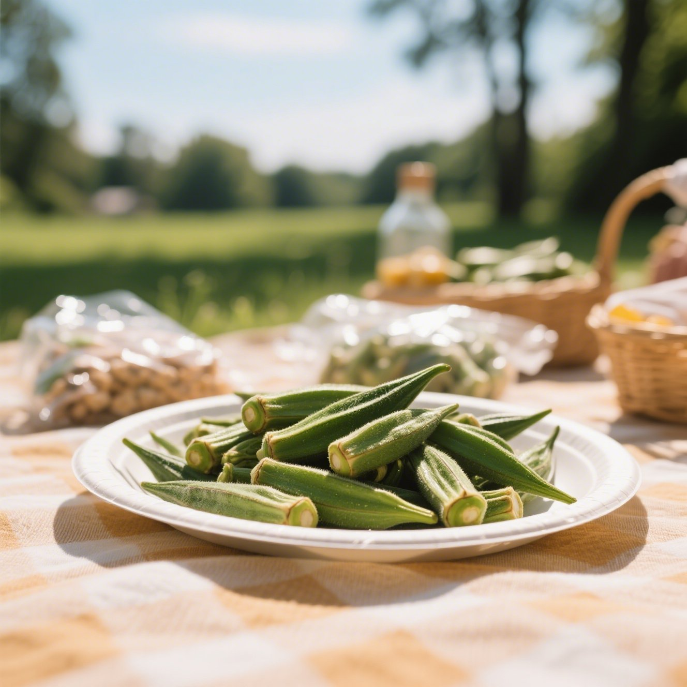

秋葵乾 (250g)
脆口秋葵，清爽展開日常的綠意節奏
嚴選台灣鮮採秋葵，低溫脫水保留完整形體與營養纖維。輕脆不油膩，入口回甘，是你生活中不可或缺的蔬食系零嘴。
- 成分: 秋葵、少許天然糖（依實際商品調整）
- 保存方式: 避免陽光直射，請存放於陰涼乾燥處
- 賞味期限: 6 個月（開封後請盡速食用完畢）
價格250元
購買數量
1
detail1.jpeg)
選用台灣在地契作的鮮嫩秋葵，清洗後以低溫烘乾技術慢速處理，保留蔬菜原本的形狀、色澤與豐富膳食纖維。整支秋葵乾脆口清香，無多餘調味，吃得到蔬菜天然的甘甜與微微黏性纖維。無添加人工香料、無油炸工序，是嘴饞時補充營養、解饞無負擔的蔬食零嘴，也能搭配沙拉、便當或穀物輕食一起享用，讓健康更融入你的日常節奏。